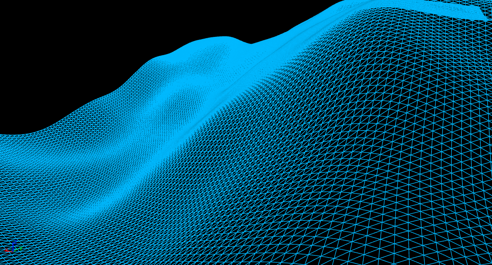
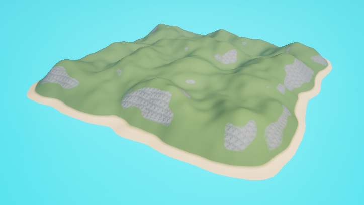
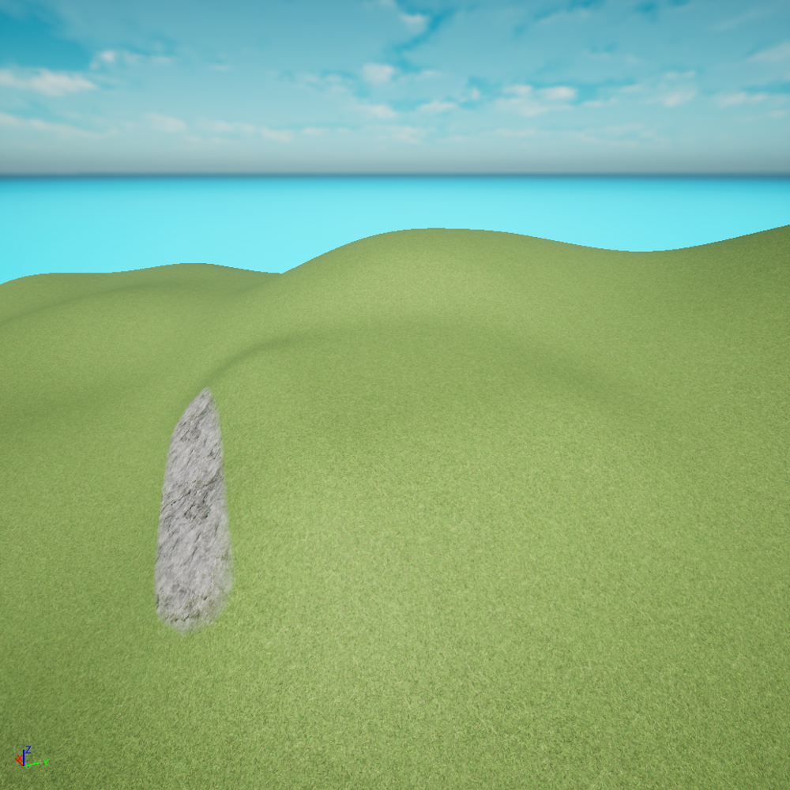
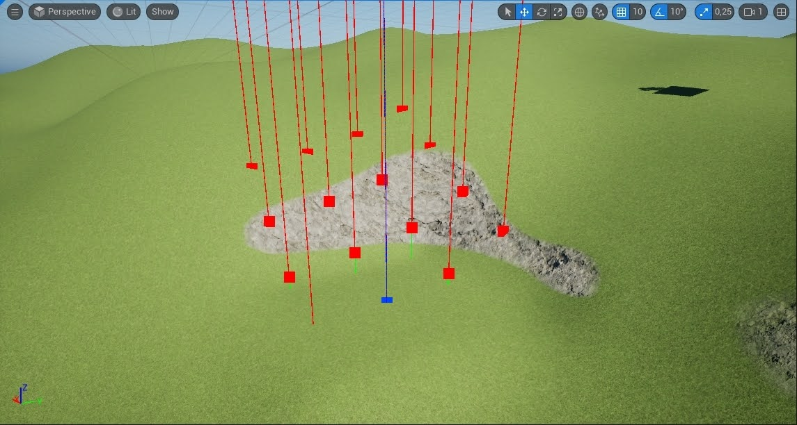

Procedural Terrain Generation
Introduction
For my final course at the University of Skövde, I decided to work with procedural terrain generation to create environments suitable for games in Unreal. At the time, I had been playing a lot of Helldivers 2, a game in which you play on maps which have been procedurally generated, and I wanted to create something in a similar vein. I found it intriguing how the game was capable of creating various terrains while still keeping the maps "playable" by having it be possible to traverse between all points of interests. Of course, within the limited timeframe I had of roughly 2 months, I would not be able to create something as nuanced as the generation Helldivers 2 has. However, in the end, I was able to put something together that I was sufficiently satisfied with.
Procedural terrain generation is a deceptively complex subject as it involves multiple intersecting techniques with each of them being quite complicated. As a general overview, it involves the creation of meshes which represent the geometry, working with shaders to paint the terrain, and procedural algorithms responsible for making the terrain continuous and cohesive. Part of why I chose the subject, though, is because I have had experience with most of these from previous courses and personal projects. When it comes to working with geometry/meshes, I have programmed that before in Unity and I have learnt how to make donuts in Blender in my free time. As for working with shaders and procedural algorithms, I have had experience with both from previous course, and for our bachelor thesis, a classmate and I even explored how different procedural noise algorithms performed as shaders.
Most of what I present hereafter is not overly technical in detail, but rather focuses on the solutions I've come up with for the problems that come with procedurally generating terrain.
Generation of Geometry
 The first step of generating terrain for game worlds involves the creation of the ground players will stand on. I decided to utilize Perlin Noise with Fractal Brownian Motion to generate height curves. I chose it because it's an algorithm I have experience with, and more importantly, an implementation of Perlin Noise is readily available in the engine, so I don't have to make one myself. Unfortunately, the Permutation Table can't be modified which I could've used to prevent periodicity in the noise pattern. However, implementing Fractal Brownian Motion proved to be enough to solve that problem. The final algorithm takes an XY input and outputs a floating point value which in this case is used a height value. By taking the XY-coordinates of vertices in a plane and using the output as the Z-coordinate, height curves can be generated as seen in the provided image.
 To apply textures to the mesh, I made a shader that utilizes Triplanar Projection which projects textures from the coordinate axes. I did this because I found that assigning UV-coordinates to a Dynamic Mesh in Unreal took a non-insignificant amount of time. The method also has the advantage of textures not being awfully stretched due to height curves. Which texture is assigned where on the mesh is decided based on height and normal direction. Grass is the default texture, but if the terrain is too steep, it's replaced by stone, and below a certain height value, grass is replaced by sand.
Placement of Structures
The placement of structures is a process divided into two main parts. First, a suitable spot for placement has to be found. Secondly, the geometry at the spot has to be adapted to fit the structure being placed. After both are done, the structure just has to be instantiated.
To find suitable placement spots, I decided to go with the approach that No Man's Sky does with its building placement. What they do is that they place buildings within the cells of a grid field from a top-down view. The main benefit from this is that it's easy to prevent structures from being placed on top of each other, but it's also generally an efficient way of somewhat evenly spreading points over a larger terrain that still looks natural. As for finding suitable placement spots within those cells, I decided to make my own algorithm that tries to find a spot that requires minimal modifications to the geometry that is already there in order to make the placement look as natural as possible. However, before making the placement algorithm, I decided to make the algorithm that adapts the geometry as how the placement algorithm works most likely would come to depend on it.
The first thing the algorithm that adapts geometry does is that it flattens an area on the terrain by setting the Z-coordinate of each vertex in an area to the same value. This makes it easy to place a structure on top of that area, but only doing this does not look very good as it gives the area sharp edges as can be seen in the picture.  To make it look more natural, the geometry within a certain distance to the edges of the flattened area is smoothened. This is done by moving the Z-coordinate of each vertex a percentage towards the Z-coordinate used for flattening. The percentage is inversely proportional to the distance to the closest edge, meaning 100% on the edge of the flattened area (0 distance), and 0% at max distance. I thought this looked a bit too linear when I first tried it, so I also added little curve into the equation which made the results look much more natural.
When it comes to finding placement spots for structures, one could of course just place them randomly. However, that can at times look unnatural as structures in real life at least have some logic to where they are constructed. If I were to construct something somewhere within an area, I would probably try to find a spot where the ground is reasonably flat. This is the logic I went by when creating the algorithm that finds suitable placement spots for structures. It also works quite well with the earlier described algorithm since that works by flattening an area whereas this one tries to find an area that already is somewhat flat. This ends up resulting in behaviour that tries to minimize how much the terrain has to be modified when placement occurs.
 The algorithm works by testing an amount of sample points to find how "flat" the area at each of those points are. This is done by finding the difference between the lowest and highest corner of the area to be flattened. Whichever sample point resulted in the lowest difference in height is the point which had the flattest area. Of course, this is only an approximation, so it may not be 100% correct, but it's fast. In the final implementation, I've set it up as such that within the grid that stretches across the map, 16 samples points are tested in every cell in a 4x4 pattern. The flattest sample point from every cell is where a structure is to be placed. I've also set it up as such that it's possible to save the flattest sample points into a list instead of immediately placing structures at them. If I don't want every cell in the grid to have a structure, I can just pick some of the ones from the list instead of all of them. The list is also sorted from the lowest height difference to the highest height difference, so the best sample points can be picked in descending order.
6x6 grid (invisible) with 4x4 sample points in each cell. Pink represent the sample point with the lowest height difference within the cell.
Final result of the system to place structures. Not every cell on the grid field is set to have a structure in this case, only the top 6 with lowest height difference.
Decorating the Terrain
The final part I wanted to accomplish with the terrain generation was to make the final result look somewhat decent. This would be done by decorating it, in this case with grass and trees. Originally, I planned to use Poisson Disk Sampling to spread points over the terrain. Each point would then do a sanity check to see if a decoration could be placed at its location. Before going ahead with this approach, I found out about the Procedural Content Generation Framework within Unreal, and I decided to explore if I could use that instead as I'd rather avoid reinventing the wheel. What I found was that the framework was more than enough for what I wanted to accomplish. After a while of working with it, I managed to get it to distribute decorating objects in a way that avoids structures already on the terrain with some additional rules such as not allowing decorations where the terrain is too steep.
What I learned
All in all, I cannot claim I have learned too many new things with this project as most of it is founded on techniques I've already had experience with. At most, I could claim that I've acclimated myself to the concept of procedural terrain generation. Overall though, I am satisfied with the project. There are certainly some aspects I could continue to improve on, but that would probably end up becoming a never ending process, and I believe what achieved so far amounts to a decent stopping point. Prior to this, when it comes to procedural generation, I had only done a simple endless runner in 2D which used agent-based dungeon growing, so this project has certainly been a step-up.
I managed to find the old endless runner I made, so I have inserted it below.